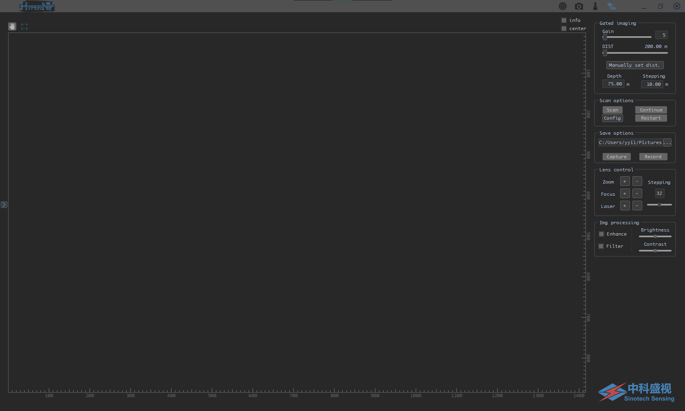
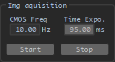

DJJK 软件介绍与使用说明
软件界面
□ 主界面

□ 设置界面

分组功能
□ 主界面
一 标题栏
程序图标
设置按键
打开设置菜单 (设置菜单界面如下):

- preferences 设置 (快捷键 Alt + S)
显示设置界面 (具体内容见后)
- export pref. 导出设置文件 (快捷键 Alt + E)
程序将弹出对话框，指引使用者选择设置文件的保存位置及名称, 用于保存当前程序状态
- load pref. 导入已保存的设置 (快捷键 Alt + R)
导入预先保存的设置, 并依此设置程序参数
*注1: 此操作支持文件拖拽 (拖拽文件至程序界面中)
*注2: 当读取设置文件失败时程序将会保持原有参数不变, 并并弹窗提示
截屏按键
单击此按键以进行程序屏幕截图, 并保存至图片储存目录 (保存的图片文件名以screenshot_起始)
清理按键
单击此按键以清除界面显示 (串口数据, 图像显示界面)
*注: 在非预览状态下, 清除按键会额外清除程序中的图像缓存
二 设备/串口连接

Search for devices 设备搜索
单击此按键进行设备搜索, 当程序搜索到与电脑相连的相机时, Turn on 按键将会亮起
*注: 当有多台相机连接至电脑时, 将会使用第一台搜索到的相机
Turn on 连接至相机
单击此按键连接至相机, 相机开启后 Turn off 按键将会亮起
*注: 当以太网相机连接失败时, 可先检查相机是否与电脑处于同一网段, 若他们处于不同网段, 则可调整电脑局域网设置, 或于设置界面调整相机ip
Turn off 断开连接
单击此按键断开与相机的连接
*注: 断开连接后会程序会自动进行一次设备搜索
TCU 时序控制器
填写对应串口号并敲击回车以连接对应串口, 连接时默认波特率为 115200
*注1: 当程序启动时将会连接默认串口, 即程序上次使用中最后连接的串口
*注2: 当程序成功连接特定串口后, 对应串口标识将变为淡蓝色; 若未能成功连接串口, 对应标识将变为淡红色
三 相机参数控制

CMOS Freq. 相机帧频
此项输入支持浮点数 (精度至0.01, 即10mHz), 输入后敲击回车 (或单击 set params 按键) 进行设置
Time Expo. 曝光时间
此项设置单位为毫秒 (ms), 输入支持浮点数 (精度至0.001, 即1μs), 输入后敲击回车进行设置, 此程序中此项默认值为 1s / ccd freq. (如 10Hz)
Start 开始预览
单击此按键进行图像采集的预览, 同时 Stop 按键将会亮起
Stop 停止预览
单击此按键停止图像采集的预览
四 选通参数设置

*注: 此分组中数据输入均以敲击回车 (主键盘或数字键盘) 的方式进行设置, 且仅在已连接TCU串口时生效
MCP
此项设置与相机增益类似, 控制成像亮度
拖动滑块, 或在输入框中输入后敲击回车进行设置
*注: 输入框中仅接受 0 - 255 的整型输入
Estimated Distance 预估距离
此项设置显示当前延时下预计距观测目标的距离, 可通过拖动滑块调整, 其最大值可在设置界面调整
Depth 景深
此项设置控制选通门的开启时间与激光脉宽, 其输入仅接受整型输入, 其输入单位为 m
Stepping 步长
此项设置控制手动调整延时与门宽时的步长, 其中
- 键W: A帧延时增加 5 倍步长
- 键S: A帧延时减少 5 倍步长
- 键A: A帧延时减少 1 倍步长
- 键D: A帧延时增加 1 倍步长
- 键I: 门宽增加 5 倍步长
- 键K: 门宽减少 5 倍步长
- 键J: 门宽减少 1 倍步长
- 键L: 门宽增加 1 倍步长
其单位为米 (m)
Manually set dist. 手动设置距离
单击此按键后通过弹窗中手动输入的方式获取距离以发送至TCU (以模拟测距仪输入)
五 镜头参数控制

Zoom/Focus/Laser 变焦/聚焦/激光光斑
按住 + 或 - 按键进行调整, 松开按键后停止
镜头控制速度滑块与输入框
拖动滑块, 或于输入框中输入控制速度 (步长) 以修改镜头控制速度, 输入框内仅接受 1 - 64 的整型输入
六 图像/视频存储设置

存储位置
- 可单击...按键开启文件夹对话框后进行选择 (新建或选择已有)
- 可直接修改存储路径至电脑已有路径
- 可直接于输入框中输入新路径 (新路径须位于已有路径下)
*注: 如创建文件夹失败, 程序将弹窗提示
Capture 抓图
单击一次此按键后会开始向目标位置中写入显示的图像数据, 速频率与当前帧频相同, 再次单击后停止写入
*注: 当内存中暂存的未写入图片过多时, 程序会自动停止图片写入并弹窗提示
Record 录制
单击一次此按键后会开始以显示图像为基础进行视频录制, 并加入信息提示 (当前距离/景深) , 再次单击后停止录制
*注: 视频将缓存至系统临时文件夹, 待录制完成后移动至目标位置
七 图像操作

- Enhance 增强
- Filter 稳定
- Brightness 亮度
- Contrast 对比度
八 扫描

Scan 扫描
在设置界面设置起止延时与帧数后, 单击此按键进行扫描 (详见设置界面)
扫描时的图片存储设置可在设置界面更改
Continue/Restart 恢复/重新开始
九 显示界面

图像显示区域
图像可通过滚动鼠标滚轮的方式手动放大, 放大倍数为 1.0x, 1.5x, 2.0x, 4.0x, 8.0x
*注: 图像显示区域随程序界面大小变化而变化
图像标尺
在标准放大倍数下, 图像的显示尺寸大小, 随图像显示区域大小变化而变化
info 信息显示
选中此复选框后, 图像显示界面依据当前功能设置显示 (延时, 门宽) / (距离, 景深), 详见设置界面说明
center 中心十字线
选中此复选框后, 图像中心将显示中心十字线, 颜色与背景灰度相关
□ 设置界面
一 扫描设置

starting / ending dist 扫描起止距离
执行扫描时的起始及终止延时, 输入方式同 TCU 参数设置
frame count 扫描帧数
设置程序扫描时的总帧数
save img 保存图像
当复选框被选中时, 执行扫描将会保存每帧扫描的图像
*注: 当复选框被选中时, 程序执行扫描时将会创建扫描文件夹, 并保存本次扫描参数; 当无复选框被选中时, 程序执行扫描时将不会保存文件
filter 扫描过滤
当复选框被选中时，扫描中若出现明亮图像则会暂停扫描;
二 设备选项

Auto Gain 增益自适应
当此复选框被选中时, 程序会依据当前成像亮度修改 TCU 中的 MCP 输出
*注1: 此项当且仅当 TCU 串口已连接时生效 *注2: 此项在增益过低时不稳定 (如低于30时)
Central Symmetry 中心镜像
当此复选框被选中时, 图像显示为中心镜像后的图像
laser 能量设置
分别为 0%, 50%, 100%, 目前系统上电时激光默认为 50% 能量
*注: 此项当且仅当 TCU 串口已连接时生效